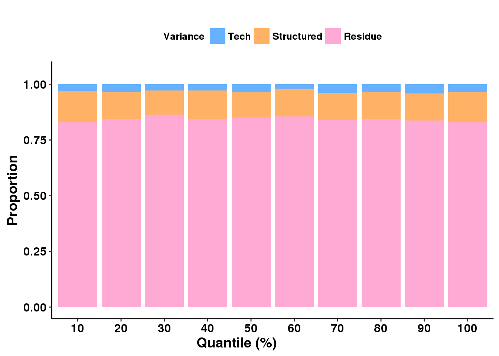
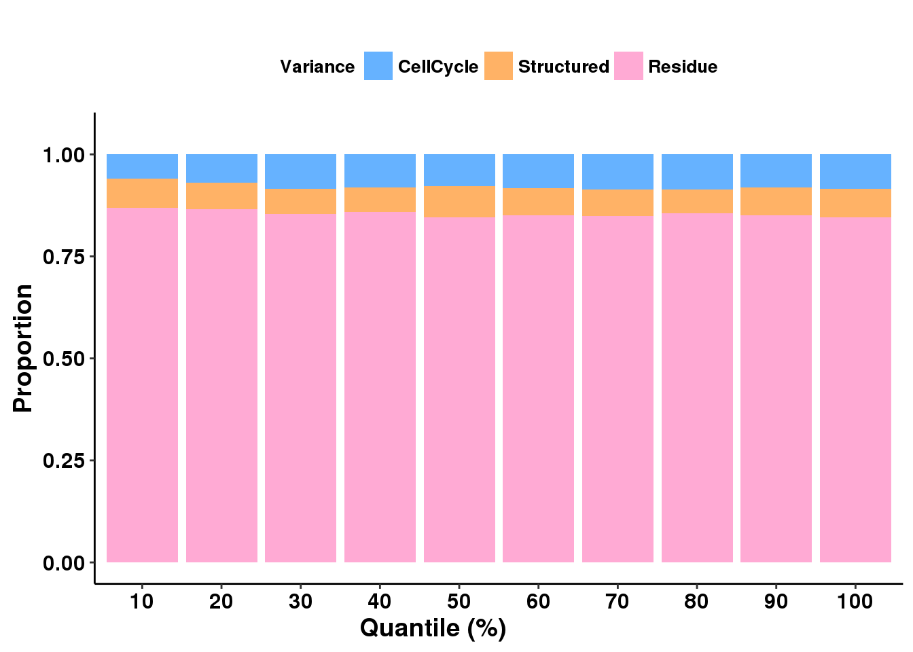
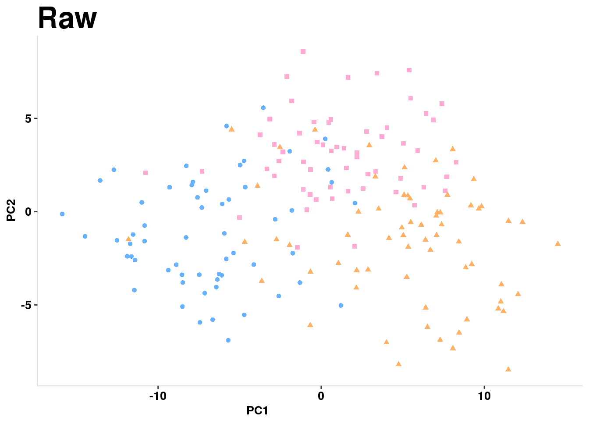
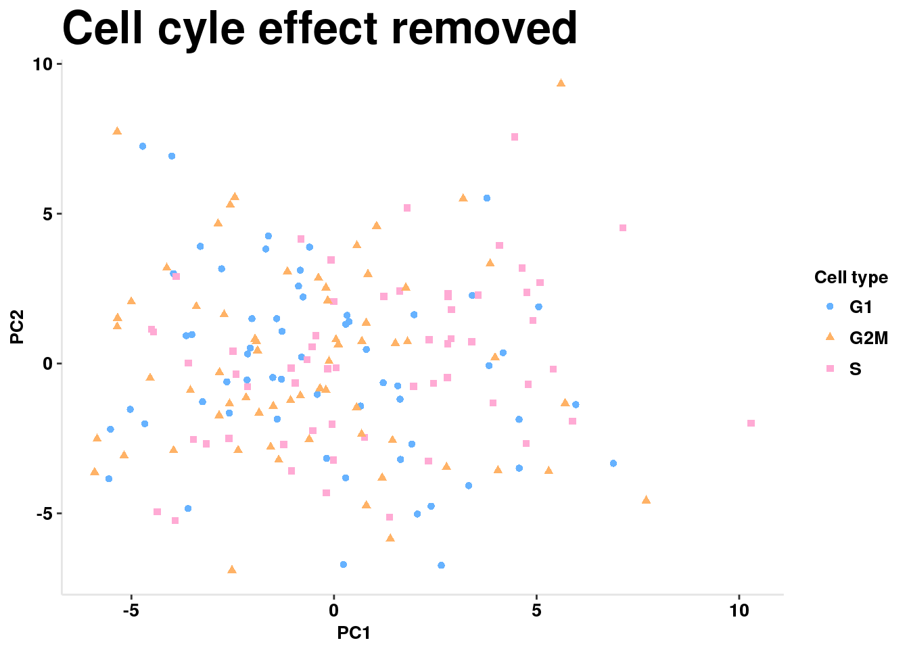

Last updated: 2017-02-27
Code version: e1c038a
#install.packages("devtools")
#devtools::install_github("ChenMengjie/Citrus")
library("Citrus")library(reshape2)
library(ggplot2)
#devtools::install_github("kassambara/easyGgplot2")
library(easyGgplot2)
library(stringr)This uses the data from the Beuttner et al cell cycle paper. This dataset has the top 500 non cell cycle genes, 100 cell cycle genes and 20 spikeins with the largest variance accross samples. The data The data has 182 cell opservations for each of the genes in the set.
data(CellCycleData)
table(CellCycleData$Label)
CellCycle NonCellCycle Spikein
100 500 20 The control matrix is cell by gene table with expression for the genes with the spike in label. There are 20 genes and 182 cells.
The target matrix is cell by gene with expression data for the genes that do not have the Spikein label. There are 600 genes and 182 cells.
Control <- CellCycleData$Expression[, CellCycleData$Label ==
"Spikein"]
Target <- CellCycleData$Expression[, CellCycleData$Label != "Spikein"]
#run scPLS
#technical factors (k1=2)
#biological factors (k2=5)
system.time(res <- scPLS(Target, Control, k1 = 2, k2 = 5, iter = 100,method = "EM", Chunk = FALSE, center = TRUE)) user system elapsed
12.053 0.000 12.031 The technical effect can be looked at using the spike ins as the control genes and all other genes as the target.
The default algorithm is the “EM-in-Chunks” algorithm, which will randomly devide genes into different chunks, average the estimates from chunks and thus accelarate the computation. The default chunk size is 1000. We recommend to use the “EM-in-Chunks” algorithm only for large gene sets. When Chunk = FALSE, the “Naive EM” algorithm will be used. In addition, scPLS() will center the expression of each gene to mean of 0 unless setting center = FALSE.
summary(res) Length Class Mode
Factor 3000 -none- numeric
Loading 910 -none- numeric
Likelihood 1 -none- numeric
Z 364 -none- numeric
lambdaY 1200 -none- numeric
lambdaX 40 -none- numeric
psi_y 600 -none- numeric
Method 1 -none- character
Adjusted 109200 -none- numeric
VarianceSummary 6 data.frame list Confounding factor: lambdaY
counfounding loaing matrix: z
strcture factor matrix \(\Lambda_\mu\) : Factor
structured factor loading matrix U: Loading
The likelihood for 2 is saved as Likelihood, which can be used for model comparison later. The expression matrix after adjusting for coufounding effect is stored in Adjusted, which is calculated by Y − ΛyZ.
head(res$VarianceSummary) Sample SampleConfounding SampleStructure Model
ENSMUSG00000000127 1.043 0.002 0.088 1.036
ENSMUSG00000000149 1.128 0.017 0.109 1.120
ENSMUSG00000000276 1.188 0.009 0.061 1.181
ENSMUSG00000000308 1.122 0.084 0.074 1.114
ENSMUSG00000000325 1.187 0.004 0.187 1.178
ENSMUSG00000000409 1.142 0.004 0.048 1.135
ModelConfounding ModelStructure
ENSMUSG00000000127 0.002 0.089
ENSMUSG00000000149 0.018 0.112
ENSMUSG00000000276 0.009 0.068
ENSMUSG00000000308 0.090 0.076
ENSMUSG00000000325 0.004 0.188
ENSMUSG00000000409 0.004 0.050VarianceSummary stores total sample variance and sample technical variance as well as total vari- ance and technical variance estimated by the fitted model for each gene. We can further quantify the proportion of variance explained by different sources as the following. For each gene, the expression variance is partitioned into three components: a component that is explained by technical factors, a component that is explained by structured biological factors, and the residual error variance. Genes are evenly divided into ten quantiles based on the sample variance.
Var <- res$VarianceSummary
ConProp <- round(Var["ModelConfounding"]/Var["Model"], 3)
StructuredProp <- round(Var["ModelStructure"]/Var["Model"], 3)
PropTable <- data.frame(ConProp, StructuredProp, 1 - ConProp -
StructuredProp)
colnames(PropTable) <- c("Tech", "Structured", "Residue")
QuantileTable <- QuantileSummary(PropTable, quantiles = seq(0.1,
1, by = 0.1), rankingby = unlist(Var["Sample"]))
head(QuantileTable) Tech Structured Residue Quantile
1 0.03171667 0.1387167 0.8295667 10
2 0.03467273 0.1205455 0.8447818 20
3 0.02848333 0.1070500 0.8644667 30
4 0.02846875 0.1271562 0.8443750 40
5 0.03535000 0.1140500 0.8506000 50
6 0.02000000 0.1244918 0.8555082 60df <- reshape2::melt(QuantileTable, id.vars = "Quantile")
colnames(df)[3] <- "Proportion"
colnames(df)[2] <- "Variance"
ff <- ggplot2.barplot(data = df, xName = "Quantile", yName = "Proportion", groupName = "Variance", groupColors = c("#66B2FF", "#FFB266",
"#FFAAD4"), position = position_stack(), backgroundColor = "white", color = "black", xtitle = "Quantile (%)", ytitle = "Proportion", mainTitle = "", removePanelGrid = TRUE, removePanelBorder = TRUE, axisLine = c(0.5, "solid", "black"), ylim = c(0, 1.05), legendPosition = "top", legendTextFont = c(10, "bold", "black"))
ff
Figure 1: Decomposition of variance into three components. Genes are evenly divided into ten quantiles based on the sample variance.
Sructured is biological effect from \(\Lambda_\mu\) and Tech is from \(\Lambda_x\) and \(\Lambda_y\)
Why does the residue hold such a large proportion?
###Remove cell cylce effect
Use same data set, further remove the cell cycle effect by treating the cell cycle genes as controll and non cell cycle genes as target.
Expression <- res$Adjusted
#dont account for spikeins
Label <- CellCycleData$Label[CellCycleData$Label != "Spikein"]
Control <- Expression[, Label == "CellCycle"]
Target <- Expression[, Label == "NonCellCycle"]
system.time(res2 <- scPLS(Target, Control, k1 = 2, k2 = 5, iter = 100,
method = "EM", Chunk = FALSE, center = TRUE)) user system elapsed
11.355 0.000 11.340 Similarly quantify proportion of variance explained by the cell cycle process.
Var <- res2$VarianceSummary
ConProp <- round(Var["ModelConfounding"]/Var["Model"], 3)
StructuredProp <- round(Var["ModelStructure"]/Var["Model"], 3)
PropTable <- data.frame(ConProp, StructuredProp, 1 - ConProp - StructuredProp)
colnames(PropTable) <- c("CellCycle", "Structured", "Residue")
median(PropTable$CellCycle)[1] 0.0685About 7% of the variance is explained by cell cycle processes.
QuantileTable <- QuantileSummary(PropTable, quantiles = seq(0.1, 1, by = 0.1), rankingby = unlist(Var["Sample"]))
df <- reshape2::melt(QuantileTable, id.vars = "Quantile")
colnames(df)[3] <- "Proportion"
colnames(df)[2] <- "Variance"
ff <- ggplot2.barplot(data = df, xName = "Quantile", yName = "Proportion", groupName = "Variance", groupColors = c("#66B2FF", "#FFB266",
"#FFAAD4"), position = position_stack(), backgroundColor = "white", color = "black", xtitle = "Quantile (%)", ytitle = "Proportion", mainTitle = "", removePanelGrid = TRUE, removePanelBorder = TRUE, axisLine = c(0.5, "solid", "black"), ylim = c(0, 1.05), legendPosition = "top", legendTextFont = c(10, "bold", "black"))
ff
Compare the expression of non cell cycle genes in original dataset and after removing beoth technical effect through spikeins and cell cycle effect with cell cycle genes.
The celltypes code from the userguide does not work. I replaced it with string parsing using the stringr package.
celltypes <- str_split_fixed(row.names(CellCycleData$Expression), pattern= "_", n=3)[,1]
pcs <- prcomp(CellCycleData$Expression[, CellCycleData$Label ==
"NonCellCycle"], center = TRUE)
PC1 <- pcs$x[, 1]
PC2 <- pcs$x[, 2]
df <- data.frame(PC1, PC2, "raw", celltypes)
colnames(df) <- c("PC1", "PC2", "Method", "Type")
ff1 <- ggplot2.scatterplot(data = df, xName = "PC1", yName = "PC2", groupName = "Type", size = 5, backgroundColor = "white", groupColors = c("#66B2FF", "#FFB266", "#FFAAD4"), xtitle = "PC1", ytitle = "PC2", mainTitle = "Raw", removePanelGrid = TRUE, removePanelBorder = TRUE, setShapeByGroupName = TRUE, showLegend = FALSE, mainTitleFont = c(25, "bold", "black"), xtitleFont = c(10,"bold", "black"), ytitleFont = c(10, "bold", "black"), xTickLabelFont = c(10, "bold", "black"), yTickLabelFont = c(10, "bold", "black"))
pcs <- prcomp(res2$Adjusted, center = TRUE)
PC1 <- pcs$x[, 1]
PC2 <- pcs$x[, 2]
df <- data.frame(PC1, PC2, "rmcellcyle", celltypes)
colnames(df) <- c("PC1", "PC2", "Method", "Type")
ff2 <- ggplot2.scatterplot(data = df, xName = "PC1", yName = "PC2",
groupName = "Type", size = 5, backgroundColor = "white", groupColors = c("#66B2FF", "#FFB266", "#FFAAD4"), xtitle = "PC1",
ytitle = "PC2", mainTitle = "Cell cyle effect removed", removePanelGrid = TRUE, removePanelBorder = TRUE, setShapeByGroupName = TRUE, showLegend = TRUE, mainTitleFont = c(25, "bold", "black"), xtitleFont = c(10,
"bold", "black"), ytitleFont = c(10, "bold", "black"), xTickLabelFont=c(10, "bold", "black"), yTickLabelFont= c(10, "bold", "black"), legendTitle= "Cell type", legendTitleFont= c(10, "bold", "black"), legendTextFont = c(10, "bold", "black") )ff1
ff2
scPLS() also provides other alternative algorithms to estimate the confounding factors. Users can select different algorithms by specifying the option method. PCA algorithm implements the initializer of our EM algorithm. The latent factors are estimated from a Singular Value Decomposition. Details of the algorithm can be found in []. Other choices all impose sparsity assumptions on the structured biological factor matrix to improve interpretability. These include “EMSparse” algorithm, with penalty on sparsity of the factor matrix pre-specified, “EMSparseTraining” algorithm with penalty on sparsity learned from training samples, “EMparseNfold” algorithm with penalty on sparsity learned from N fold cross-validation, and “IBP” algorithm with the sparse factor matrix modeled by an Indian Buffet Process prior.
#try 100 gene chunks
system.time(res_chuncks_100 <- scPLS(Target, Control, k1 = 2, k2 = 5, iter = 100,
method = "EM", Chunk = TRUE , chunk.size = 100, center = TRUE)) user system elapsed
6.842 0.036 6.873 #try 300 gene chunk
system.time(res_chunks_300 <- scPLS(Target, Control, k1 = 2, k2 = 5, iter = 100,
method = "EM", Chunk = TRUE, chunk.size = 300, center = TRUE)) user system elapsed
8.010 0.048 8.051 #try 50 gene chunks
system.time(res_chunks_50 <- scPLS(Target, Control, k1 = 2, k2 = 5, iter = 100,
method = "EM", Chunk = TRUE, chunk.size = 50, center = TRUE)) user system elapsed
7.494 0.058 7.547 Smaller chunks of genes help the algorithm run faster. With a gene set as small as this sample chunks are not needed. Chunk size is set default to 1000 if Chunk=TRUE. The number of genes comes only from the target genes.
This site was created with R Markdown